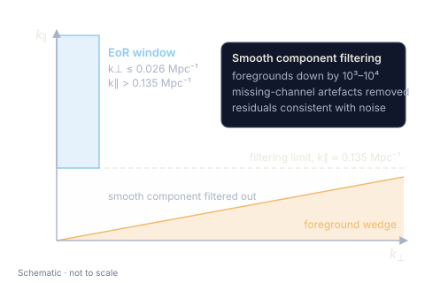

21-cm cosmology
The Epoch of Reionization 21 cm Bispectrum at z = 8.2 from MWA Data. II. Smooth Component Filtering
The Astrophysical Journal 1003, 189 (2026)
What it delivers. Adds smooth component filtering (SCF) to our MWA analysis at z = 8.2. Filtering out the spectrally smooth foregrounds lowers the cylindrical bispectrum by three to four orders of magnitude and also removes the artefacts left by missing frequency channels. In the cleaner EoR window (k⊥ ≤ 0.026 Mpc−1, k∥ > 0.135 Mpc−1), the tightest limits are −(1.25 × 104 mK)3 ≤ Δ3 ≤ (1.22 × 104 mK)3 at k1 = 0.281 Mpc−1.
Why it matters. What remains is consistent with thermal noise rather than foreground leakage. That changes the problem: longer observations should now tighten the limits directly.
